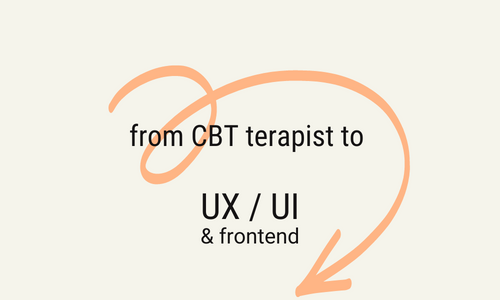
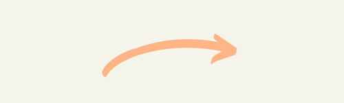
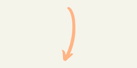

To learn and develop
I have come learn, that learning in itself and developing skills in all areas of life is like fuel to me.



Om mig
Jag har alltid vetat att jag velat skapa något. Men det tog mig många år att tillåta mig att följa den känslan, istället för att lyssnat till mina egna tankar.
Under tiden har jag arbetat med att hjälpa människor att förändra sina liv, genom KBT behandling. Och det var inte förrän jag insåg att jag även genom att skapa något, kan hjälpa andra, som jag bestämde mig utbilda mig inom UX.